Original Suzuki Parts
The original exhaust cans, rear footrests and pillion seat came with the bike. We also sourced genuine Suzuki indicators, a new genuine Suzuki front mudguard and Suzuki fasteners.
For Sale
Yellow, 40,490 miles. The last owner had it for 18 years, eight of them in storage. We’ve serviced it, fitted new Bridgestone tyres and a chain and sprocket kit, and refitted the original Suzuki exhausts.
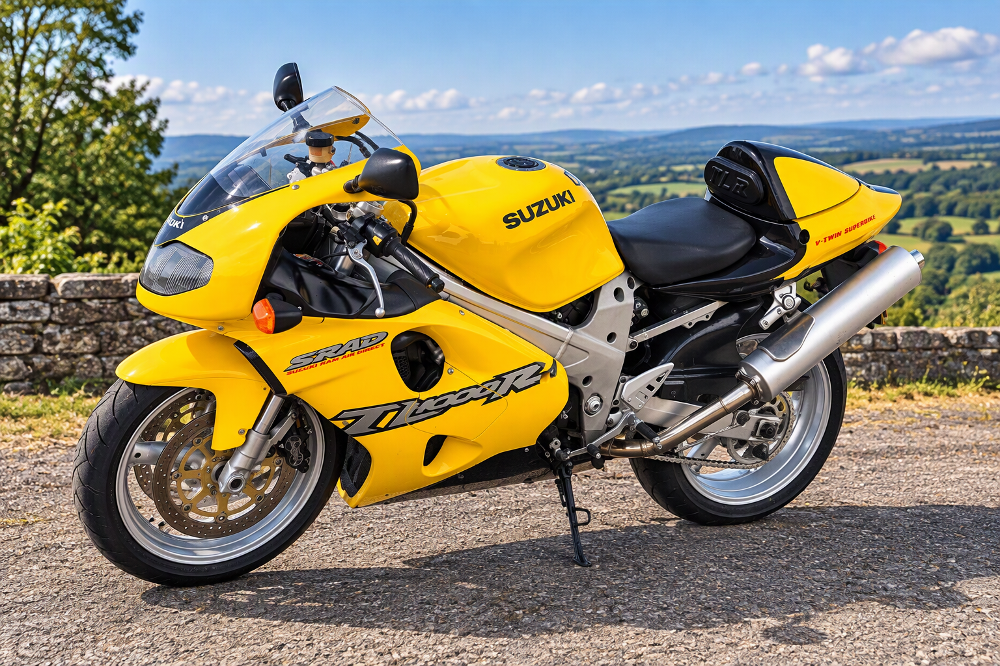
The original exhaust cans, rear footrests and pillion seat came with the bike. We also sourced genuine Suzuki indicators, a new genuine Suzuki front mudguard and Suzuki fasteners.
The Work
We refurbished the wheels and fitted new Bridgestone S21 tyres, a new chain and new sprockets.
We refurbished and pressure-tested both radiators, refitted them, added fresh coolant and checked the fans.
New engine oil, oil filter, air filter and spark plugs. Clutch bled.
We repaired and painted the nose cone, fitted a genuine Suzuki screen and polished the original exhaust cans before refitting them.
We cleaned and refurbished the brakes, refinished the front calipers, replaced the rear disc and bled the brakes with fresh fluid. We also repaired the rear brake pedal return mechanism.
We took the throttle bodies off and cleaned them, cleaned the injectors and checked they worked, and replaced the fuel pump shroud and gasket.
We checked the wiring and connections, repaired the indicator wiring, left-hand switchgear and fuse box, and remounted the ECU and regulator.
We fitted a genuine Suzuki crankcase access cover and cleaned up or replaced brackets and fixings.
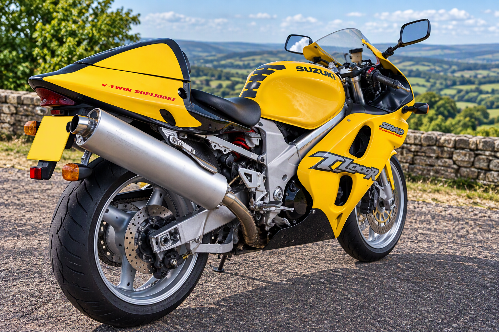
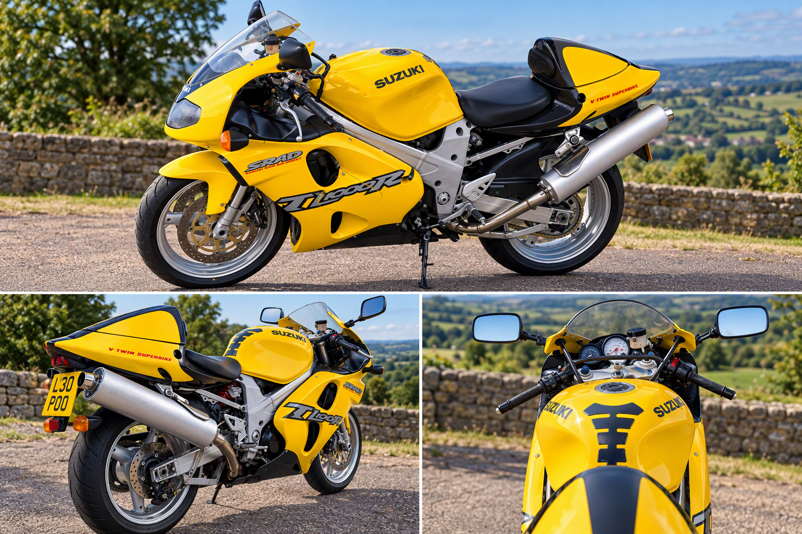
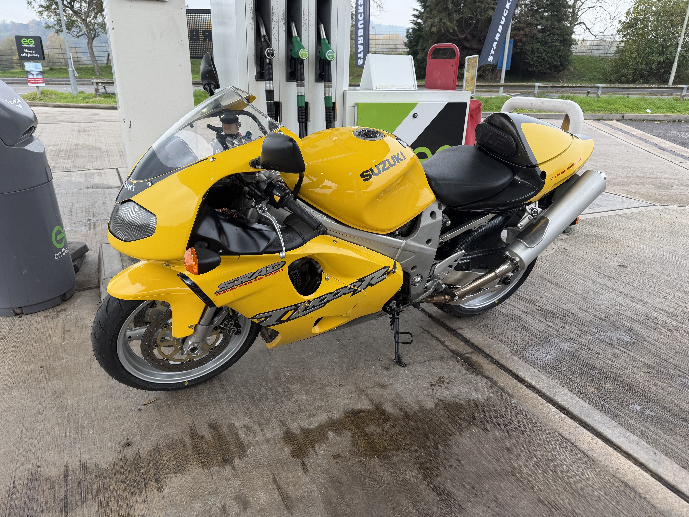
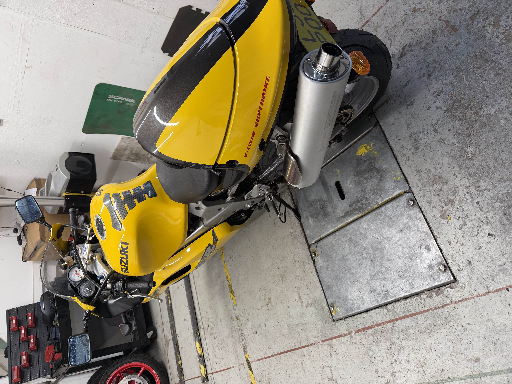
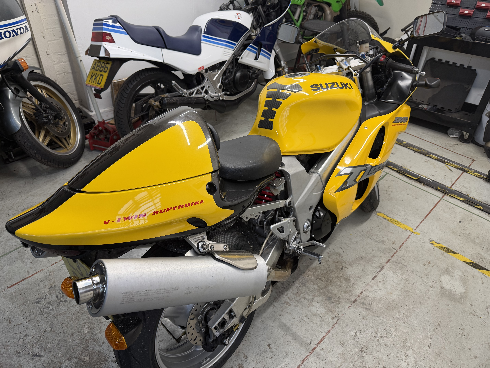
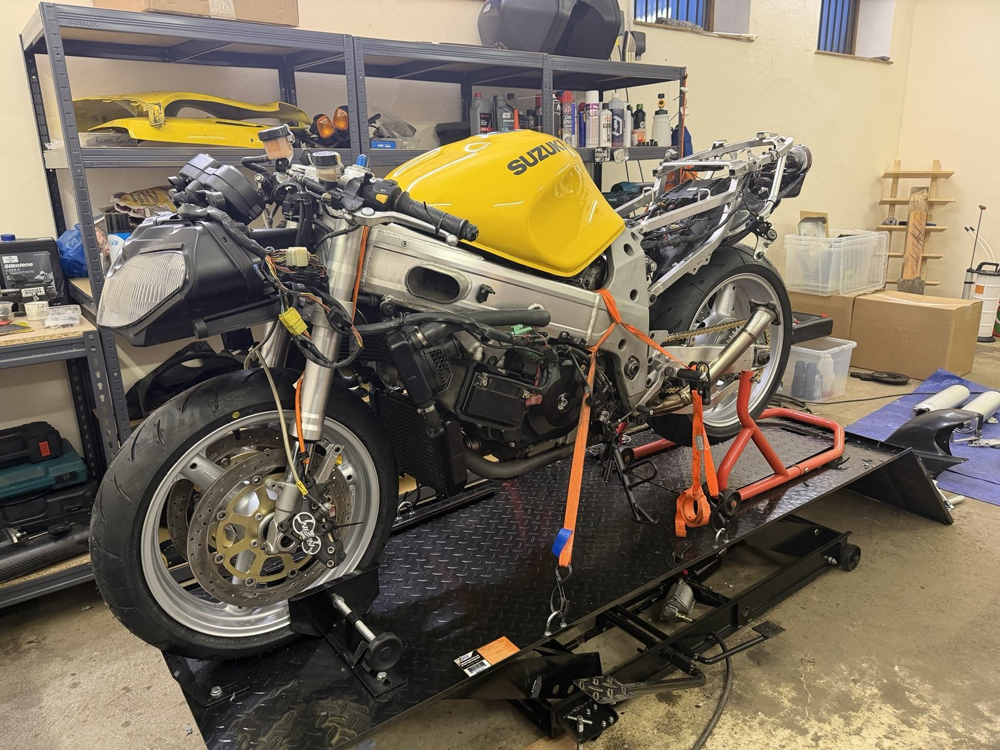
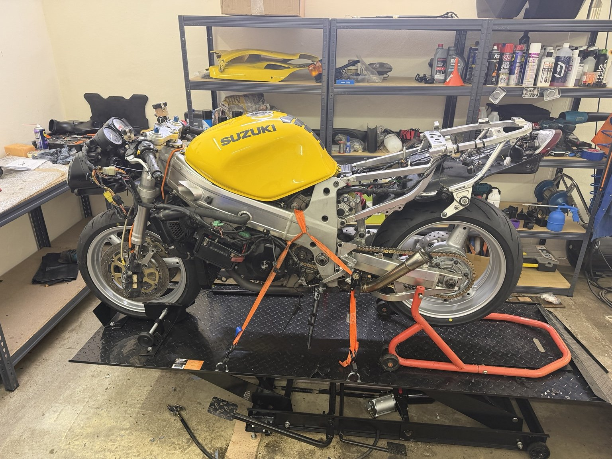
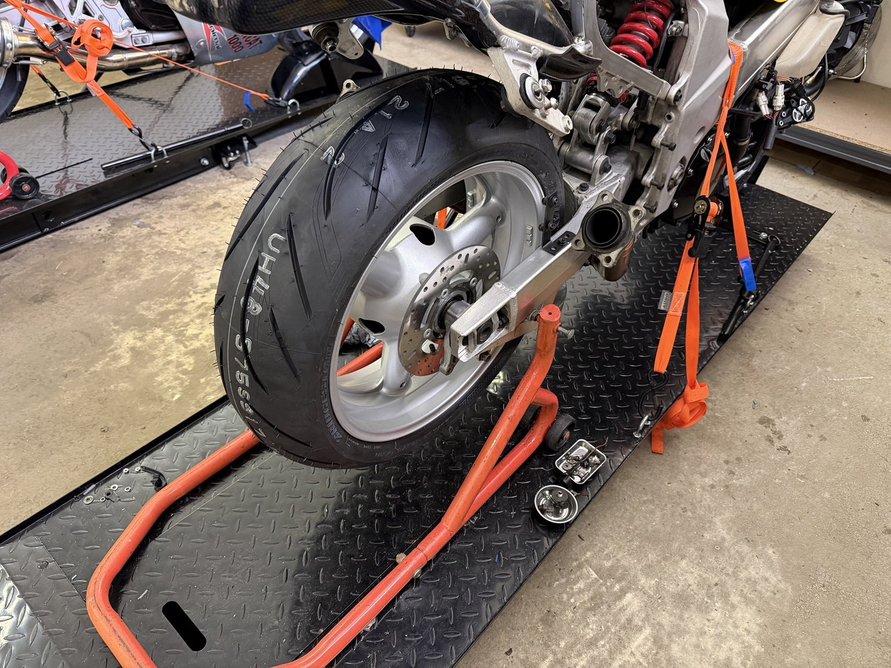
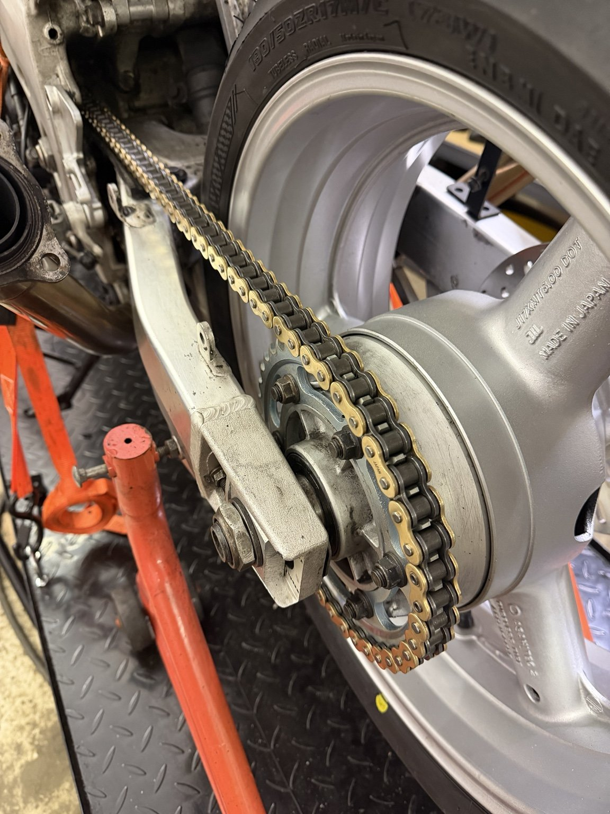
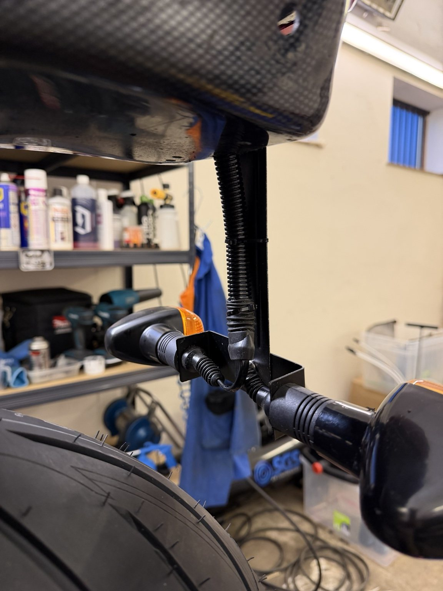
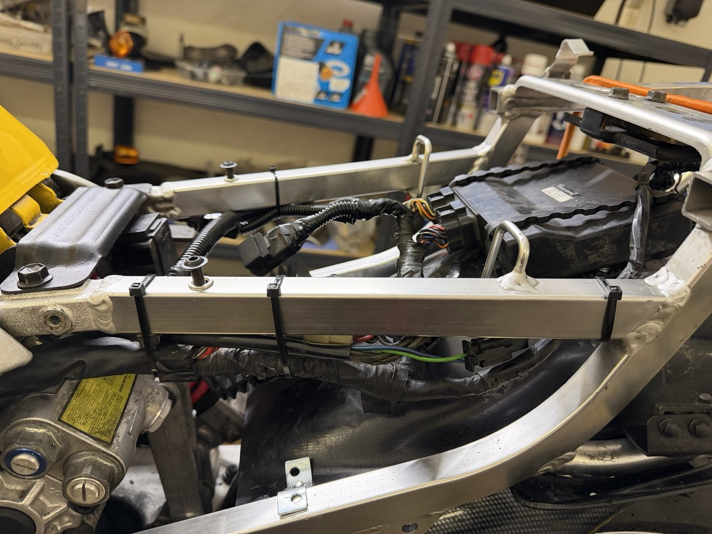
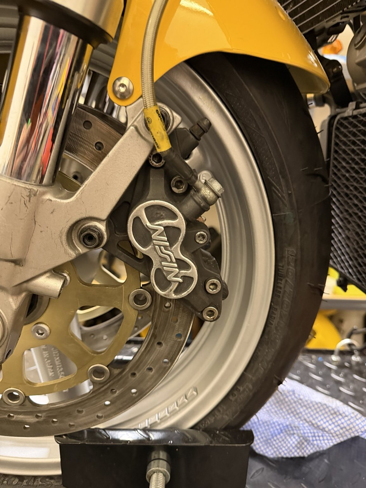
Viewings are by appointment at our workshop in Aston Munslow, Shropshire. Ask us for a walkaround if you’d like a closer look before you travel.
Arrange a Viewing